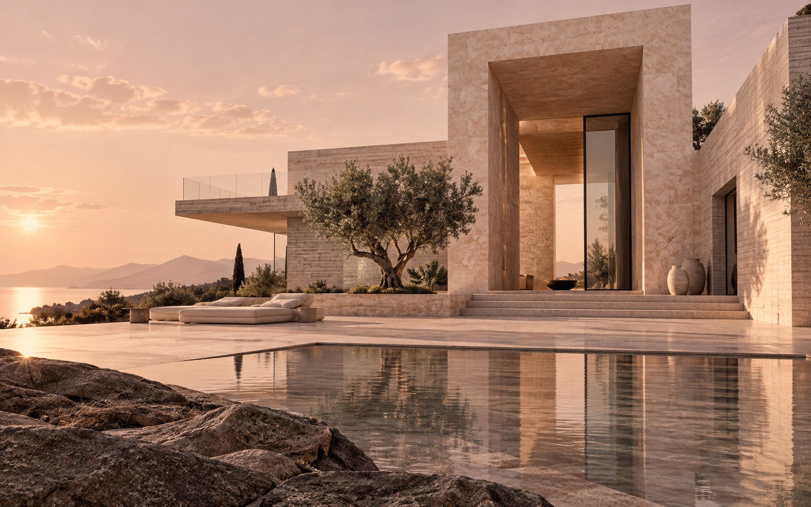
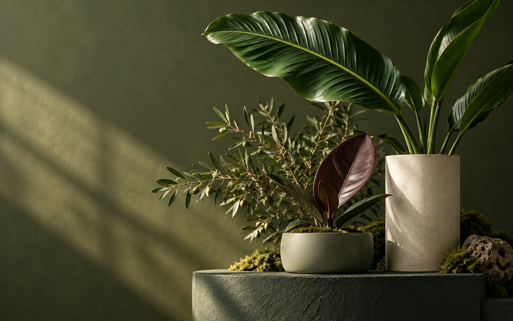

Архитектура · WebArdenArdenАрхитектура, которую можно почувствовать.Концепт / 2026Смотреть ближе⤢
E-commerce · БрендGreenFlowGreenFlowБлиже к природе. Даже онлайн.Концепт / 2026Смотреть ближе⤢
orbit↗︎ОбзорМои счетаАналитикаПлатежиВсё под контролем.Ваш финансовый обзор ООбщий баланс284 650 ₽Поступления+ 86 400 ₽Расходы− 32 780 ₽orbit ↗︎Свобода в цифрах284 650 ₽orbit / debit•••• 4082YOUR EVERYDAY↗︎＋⇄Ваши деньги.Ваш следующий шаг.Fintech · Web / MobileOrbitOrbitФинансы в человеческом масштабе.Концепт / 2026Смотреть ближе⤢